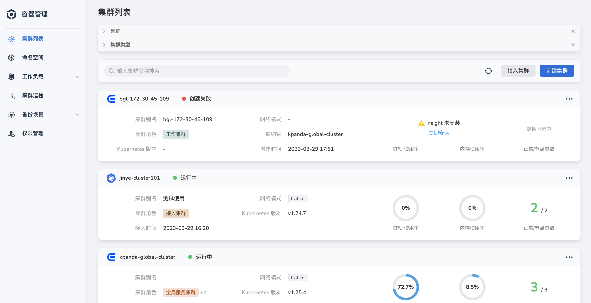
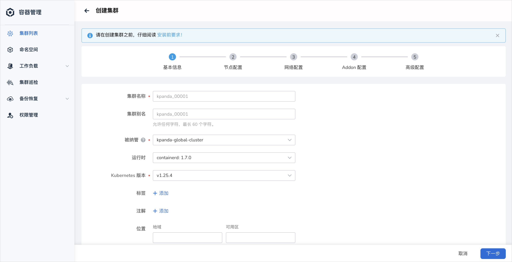
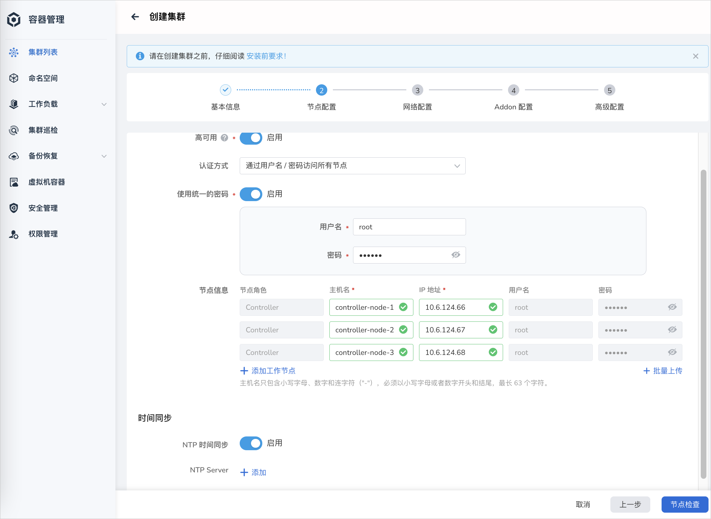
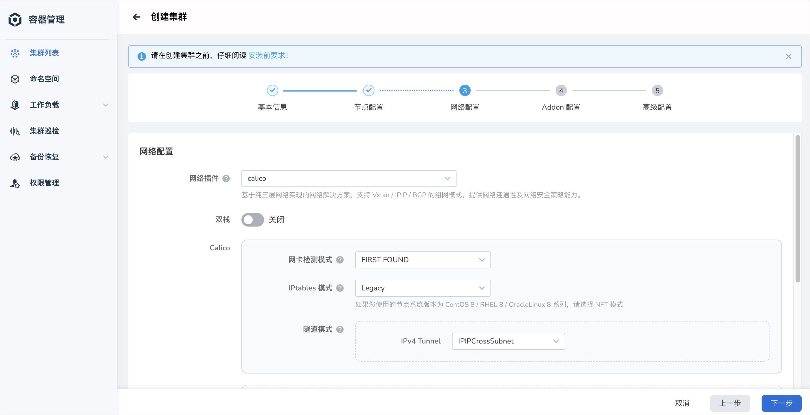
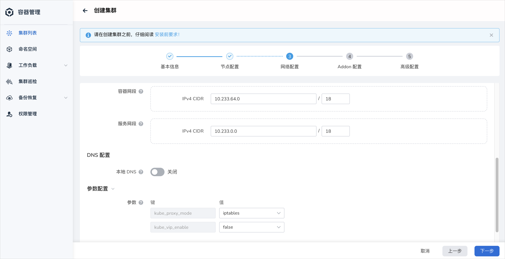
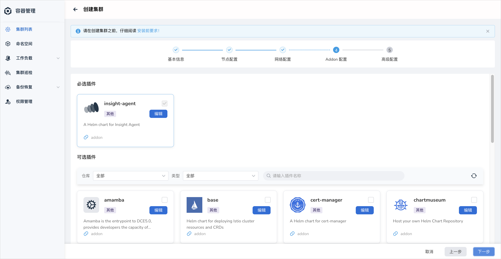
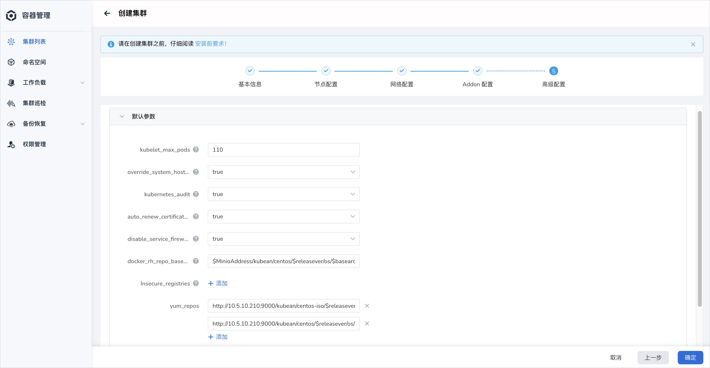
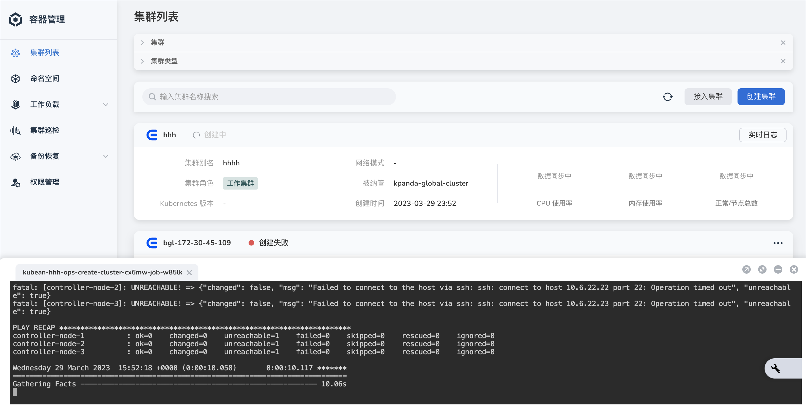
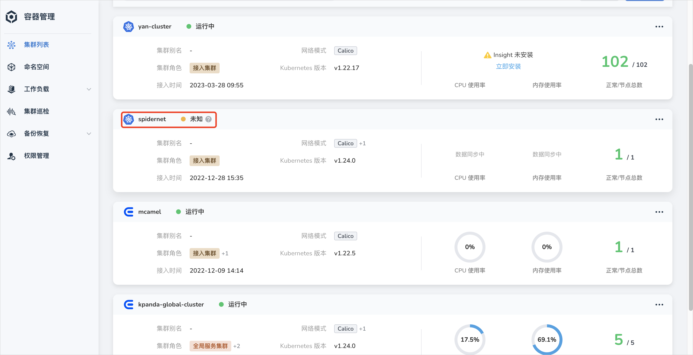

创建工作集群¶
在算丰 AI 算力平台容器管理模块中，集群角色分四类：全局服务集群、管理集群、工作集群、接入集群。 其中，接入集群只能从第三方厂商接入，参见接入集群。
本页介绍如何创建工作集群，默认情况下，新建工作集群的工作节点 OS 类型和 CPU 架构需要与全局服务集群保持一致。 如需使用区别于全局服务集群 OS 或架构的节点创建集群，参阅在 centos 管理平台上创建 ubuntu 工作集群进行创建。
推荐使用 算丰 AI 算力平台支持的操作系统来创建集群。 如您本地节点不在上述支持范围，可参考在非主流操作系统上创建集群进行创建。
前提条件¶
创建集群之前需要满足一定的前提条件：
- 根据业务需求准备一定数量的节点，且节点 OS 类型和 CPU 架构一致。
- 推荐 Kubernetes 版本 1.29.5，具体版本范围，参阅 算丰 AI 算力平台集群版本支持体系，
目前算丰 AI 算力平台支持自建工作集群版本范围在
v1.28.0-v1.30.2。如需创建低版本的集群，请参考集群版本支持范围、部署与升级 Kubean 向下兼容版本。 - 目标主机需要允许 IPv4 转发。如果 Pod 和 Service 使用的是 IPv6，则目标服务器需要允许 IPv6 转发。
- 算丰 AI 算力平台暂不提供对防火墙的管理功能，您需要预先自行定义目标主机防火墙规则。为了避免创建集群的过程中出现问题，建议禁用目标主机的防火墙。
- 参阅节点可用性检查。
操作步骤¶
-
在 集群列表 页面中，点击 创建集群 按钮。

-
参考下列要求填写集群基本信息，并点击 下一步 。
- 集群名称：名称只包含小写字母、数字和连字符（"-"），必须以小写字母或者数字开头和结尾，最长 63 个字符。
- 被纳管：选择由哪个集群来管理此集群，例如在集群生命周期中创建、升级、节点扩缩容、删除集群等。
- 运行时：选择集群的运行时环境，目前支持 containerd 和 docker，如何选择容器运行时。
- Kubernetes 版本：支持 3 个版本跨度，具体取决于被纳管集群所支持的版本。

-
填写节点配置信息，并点击 下一步 。
-
高可用：开启后需要提供至少 3 个控制器节点。关闭后，只提供 1 个控制器节点即可。
生产环境中建议使用高可用模式。
-
认证方式：选择通过用户名/密码还是公私钥访问节点。
如果使用公私钥方式访问节点，需要预先配置节点的 SSH 密钥。参阅使用 SSH 密钥认证节点。
-
使用统一的密码：开启后集群中所有节点的访问密码都相同，需要在下方输入访问所有节点的统一密码。如果关闭，则可以为每个节点设置单独的用户名和密码。
-
节点信息：填写节点名称和 IP 地址。
- 自定义参数：设置变量控制 Ansible 与远程主机交互。可设置变量参考连接到主机：行为清单参数
- NTP 时间同步：开启后会自动同步各个节点上的时间，需要提供 NTP 服务器地址。

-
-
在页面底部点击节点检查。如果检查通过则继续下一步操作。如果检查未通过，则更新 节点信息 并再次执行检查。
-
填写网络配置信息，并点击 下一步 。
-
网络插件：负责为集群内的 Pod 提供网络服务，创建集群后不可更改网络插件。支持 cilium 和 calico。选择 none 表示暂不安装网络插件。
-
容器网段：集群下容器使用的网段，决定集群下容器的数量上限。创建后不可修改。
- 服务网段：同一集群下容器互相访问时使用的 Service 资源的网段，决定 Service 资源的上限。创建后不可修改。


-
-
填写插件配置信息，并点击 下一步 。

-
填写高级配置信息，并点击 确定 。
- kubelet_max_pods ：设置每个节点的最大 Pod 数量，默认为 110 个。
- hostname_overide ：重置主机名，建议使用默认值，采用系统默认生成的名称作为主机名称。
- kubernetes_audit ：Kubernetes 的审计日志，默认开启。
- auto_renew_certificate ：在每月第一个星期一自动更新 Kubernetes 控制平面证书，默认开启。
- disable_firewalld&ufw ：禁用防火墙，避免节点在安装过程中无法被访问。
- Insecure_registries ：私有镜像仓库配置。使用私有镜像仓库创建集群时，为了避免证书问题导致容器引擎拒绝访问，需要在这里填写私有镜像仓库地址，以绕过容器引擎的证书认证而获取镜像。
- yum_repos ：填写 Yum 源仓库地址。离线环境下，默认给出的地址选项仅供参考，请根据实际情况填写。

Success
- 填写正确信息并完成上述步骤后，页面会提示集群正在创建中。
- 创建集群耗时较长，需要耐心等待。其间，可以点击 返回集群列表 按钮让安装过程后台运行。
- 如需查看当前状态，可点击 实时日志 。

Note
- 当集群出现未知状态时，表示当前集群已失联。
- 系统展示数据为失联前缓存数据，不代表真实数据。
- 同时失联状态下执行的任何操作都将不生效，请检查集群网络连通性或主机状态。
